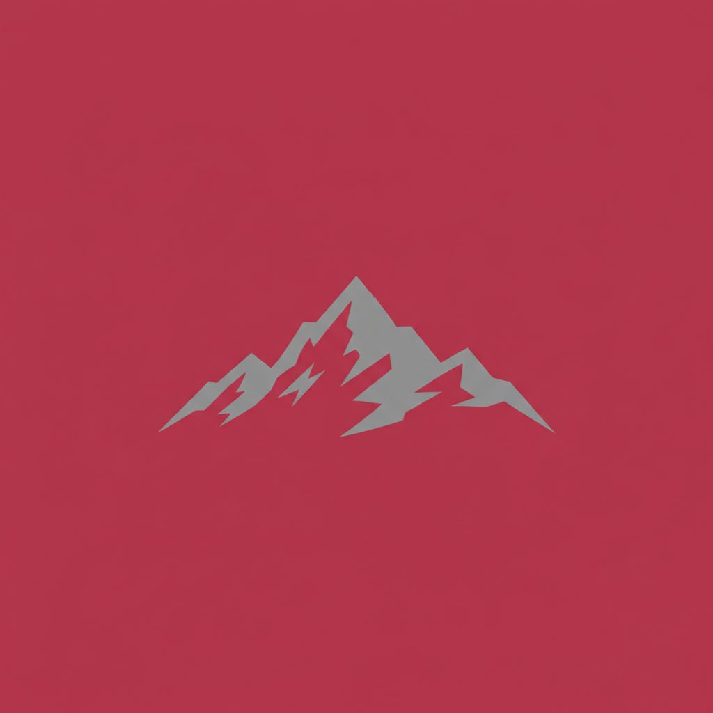
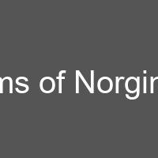

Norginde is a sovereign nation on the continent of Antarmund.
  "Heat of the Core, Strength of the Peak" | |
| Continent | Antarmund |
|---|---|
| Heraldry | Crimson with a grey mountain silhouette. |
| Cities | 1 |
Norginde is a sovereign nation on the continent of Antarmund.